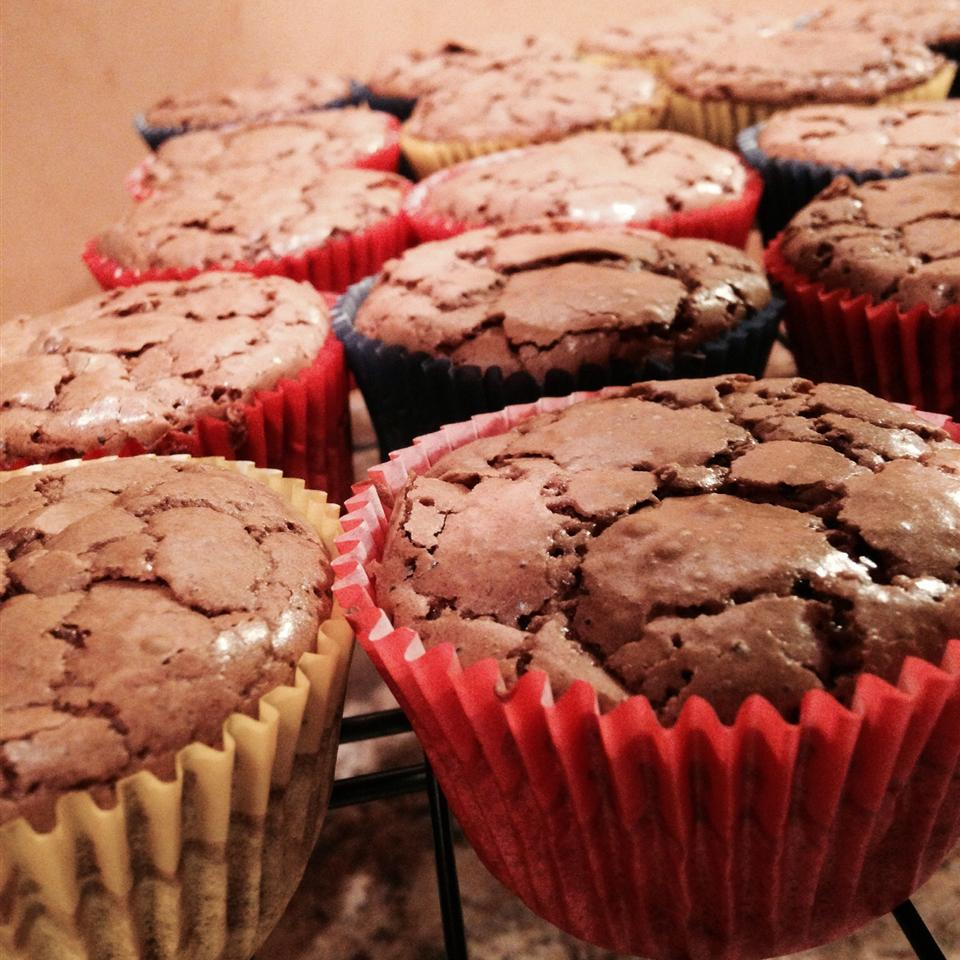

Homemade Cupcakes Recipe
Chocolate Cupcakes

Ingredients:
5 eggs
300g butter
300g dark chocolate
1/2 cup brow sugar
a pinch of salt
1 tablespoon of vanilla extract
1 cup of self-raising flour
Steps to bake:
Place paper baking cases in a muffin tin.
In a medium bowl set over a pan of gently simmering water, melt the chocolate and butter together, stirring well. Leave to cool a little.
Beat the eggs, sugar and salt in a large bowl until pale and thick.
Add vanilla extract into the mixture.
Fold the flour into the egg mixture and then stir in the melted chocolate and butter until well blended.
Spoon the mixture into the cases and bake.
Remove tin from the oven and cool for 5 minutes.
Just like that you are done! You may now enjoy your Chocolate Cupcakes!
Baking time:
Preheat the oven to 160℃. Bake for 20 minutes.
Topping:
You may dusted with cocoa powder or anything you like!
White Chocolate Cupcakes
Ingredients:
5 eggs
300g butter
300g white chocolate
1/2 cup brow sugar
a pinch of salt
1 tablespoon vanilla extract
1 cup of self-raising flour
Steps to bake:
Place paper baking cases in a muffin tin.
In a medium bowl set over a pan of gently simmering water, melt the white chocolate and butter together, stirring well. Leave to cool a little.
Beat the eggs, sugar and salt in a large bowl until pale and thick.
Add vanilla extract into the mixture.
Fold the flour into the egg mixture and then stir in the melted white chocolate and butter until well blended.
Spoon the mixture into the cases and bake.
Remove tin from the oven and cool for 5 minutes.
Well Done! Your White Chocolate Cupcakes are all ready to serve!
Baking time:
Preheat the oven to 160℃. Bake for 20 minutes.
Topping:
You may add some whipped cream and sprinkle some white chocolate chips!